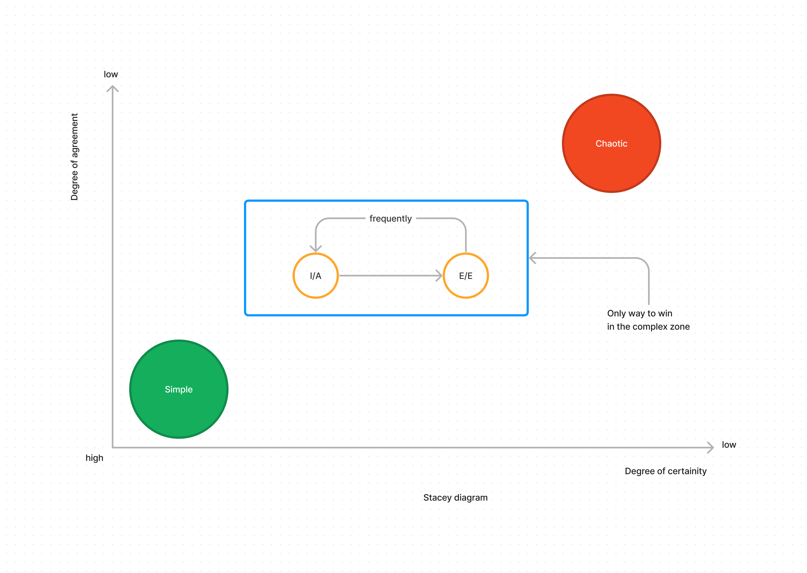
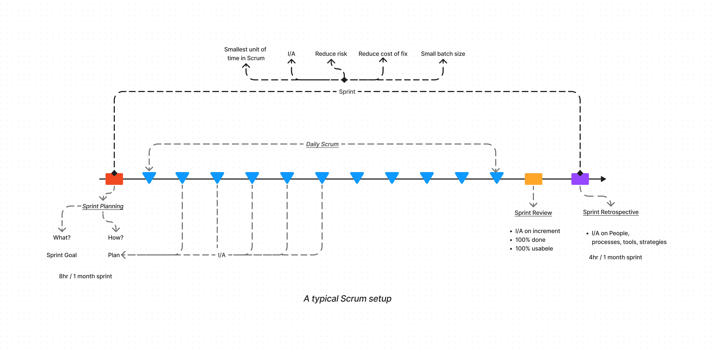
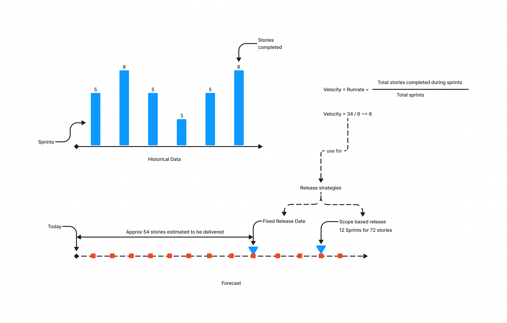
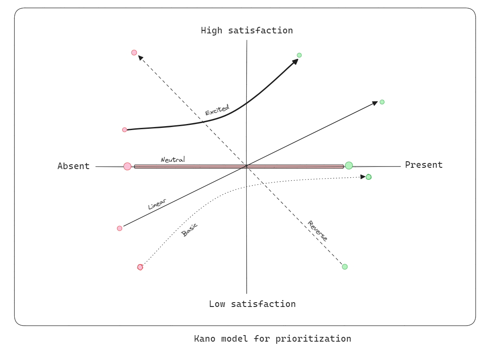
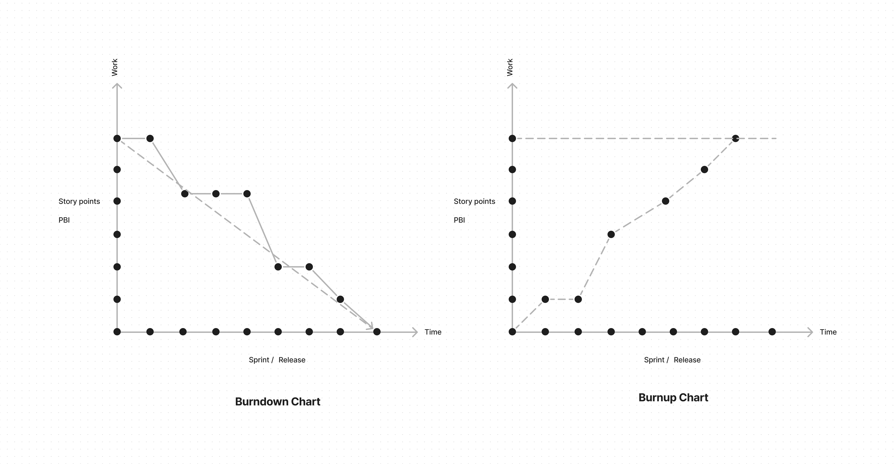

The SCRUM framework
Agility Basics

- The concept of Agile can be better understood using a stacey diagram.
- A stacey diagram shows the relationship between degree of certainity and degree of aggreement in a project
- The area in the graph is called a complex zone
- The only way to win in a complex zone is to achieve simplicity and move away from chaos
- Ways to do it?
- Inspect and adapt
- Do it frequently
- Take effective and efficient decisions
- In order to win you need to have 3 things:
- A framework - Set of basic principles - Example Scrum
- Strategies - Inifinite - Sprint duration 3hrs
- Tools and Techniques - Infinite - Jira
- Agile provides a set of values guiding principles for a winning team.
- Typically these are the values that a winning team will value.
Agile manifesto Agile principles
Scrum Fundamentals
Scrum Terms
| Scrum Teams | Scrum Events | Scrum Artifacts | Scrum Values |
|---|---|---|---|
| Product Owner | Sprint | Product Backlog | Focus |
| Scrum Master | Sprint Planning | Sprint Backlog | Respect |
| Developers | Daily Scrum | Iteration | Openness |
| Sprint Review | Courage | ||
| Sprint Retrospective | Commitment |
A typical Scrum setup

- The Product backlog refinement happens sometime during the current sprint
- The goal is to discuss the backlog items in terms of acceptance criteria, value etc.
- The backlog is then ready for the Sprint planning
- Product increment does not mean release
- Release strategy is completely dependent on the PO
- Scrum is an empirical process of Plan, do, check, and act activities
Tools, Techniques and Strategies
Working Agreements
- Mutually agreed activities and behaviours that make us achieve our goals effectively, efficiently as a team.
- Benefits:
- sets clear expectations from each other
- accountability for each others behaviours
- successfully helps working toward a common goal
- handle conflicts
- creates effective and efficient teams
- Who:
- The scrum team can brainstorm on ideas to aggree on activities and behaviors
- Stakeholders and customers can be consulted for suggestions
- When:
- To be created immediately when the team is identified
- Can be updated during sprint retrospectives
- Contents:
- Values (FROCC)
- Ways to deal with conflict
- Activities and behaviors for achiving common goals like continuous improvements
- Individual commitments
- Purpose of the team
Common Terminologies
- Definition of Ready:
- This is a list of items that tells if a PBI is ready to be considered for a sprint
- This is not a checklist where each item has to be done
- Examples:
- All acceptance criterion are discussed and agreed
- All dependencies and risks are resolved or agreed resolution plan is in place
- All questions are answered
- Size of the PBI is small
- Assumptions clarified
- Prioritized and ordered
- Definition of Done:
- List of all items that are needed to qualify an item as 100% done
- It includes all process, quality related items
- Evolves over time
- It is an ideal state that defines the work is done
- Examples:
- Coding is complete
- Quality and functional checks complete
- Tests added and run
- Reviews done
- Documentation done
- Organization defined quality processes done
- Acceptance Criteria:
- Mutually Aggreed Solution Statement
- It defines the functionality that needs implementation
- Examples:
- Have a search functionality
- Show top 16 items to user
-
Release Strategy:
- Defined by the Product owner
- It describes how, what and when are we release product iterations to customers
Types:
Time based - Fixed Time based - Cadence based Scope based The release date is fixed The release cadence is fixed The number of features is fixed 16.12 Daily, Weekly, Monthly etc. 75 features
Estimations
- There are 2 types of estimations:
- Size estimations
- These use reference points to estimate complexity of a story
- T-Shirt size : S, M, L, XL...
- Story points : 1, 2, 3, 5, 8 ...
- These are non linear estimates
- Effort estimations
- Estimates based on time needed to implement
- These are linear estimates
- Size estimations
- Estimation criteria : Scope, Time, Cost, Quality
- Traditional methods of Fixed cost, scope, time and quality work only when we are in the "simple zone"
- Estimations are not commitments
- Modern methods suggest to expect uncertainity and assume atleast 1 is variable
- We need to estimate only the variables and assess the estimate against the risk
- After considering the variables if the risk is in the acceptable zone then we are good to go
- When to estimate:
- The estimation happens in a Product backlog refinement event
- The idea is to break down large product backlog items into "SMALL" chunks
- Small enough to be I/A within the Sprint
- If the PBI is already "SMALL" then there is no reason to estimate
- Common tools and techniques:
- Planning poker:
- Technique of estimation based on Size
- Team has got PBI to work on which they will estimate using a unit e.g. Story points
- The prerequisite is there should be a reference story or stories that deem a story to have certain story points
- And all members should ideally come up with the same story points
- Planning poker:
- During the Sprint planning only "SMALL" stories must be allowed
- Sprint planning has a layer of estimations forecasts as well.
- It includes either one of the two:
- Capacity based planning
- Number of hours available vs number of hours required to finish the Sprint goal
- Historical data based planning
- Based on historical data how many PBIs have we completed
- That gives a range of the possible PBIs we can complete
- Again this is an estimation not committment
- Capacity based planning
Velocity
- Ideally if all stories are small they can be given 1 story point
- Assuming this we will consider the velocity concept i.e. 1 story = 1 story point
- We need to calculate velocity by adding all historical story points and finding an average per sprint
- Use this velocity to forecast based on release strategy
- The concept is illustrated below: 
Kano Model for prioritizations
- The Kano Model is a tool for measuring customer satisfaction.
- It prioritizes features based on how customers react to their presence or absence.
- The Kano model suggests prioritization based on the effect it will have on the end user
- A graph is plotted between customer satisfaction and future state of the feature
- A line is plotted based on the customer satisfaction levels and the following pattern emerges:
- Basic expectations : Bare minimum expectations
- Linear expectations : Keep giving more
- Neutral expectations : Does not matter if it exists or not
- Exciting zone : Whoa we were not expecting it
- Reverse zone : Feature existence is a problem
- The kano graph is illustrated below: 
Burndown Charts / Burn up charts

- Burndown Charts
- A burndown chart represents the remaining work on the Y axis and time elapsed on the X axis
- The connection of total remaining work point at the start of the time period and the end point of the time period serves as a line of average burndown
- A burndown chart is an Inspect and Adapt tool during the time period. After the time period its not so useful.
- The time period can be a Sprint or Release
- Burnup charts
- Represents the work done and usually approaches a target
- It has the same elements as burndown charts but tracks a target
- When to use:
- Use Burnup chart when tracking a target e.g. in a Fixed scope release strategy.
- Use Burndown chart to Inspect and adapt remaining work at any point in a time box.